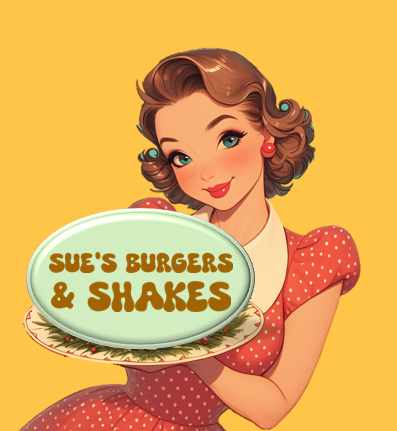
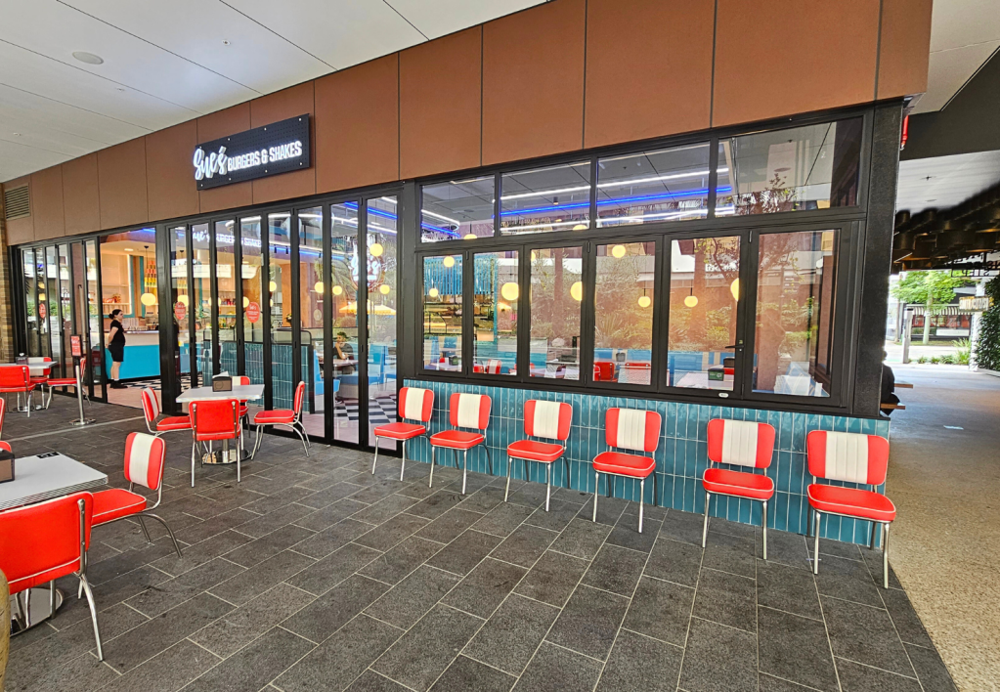
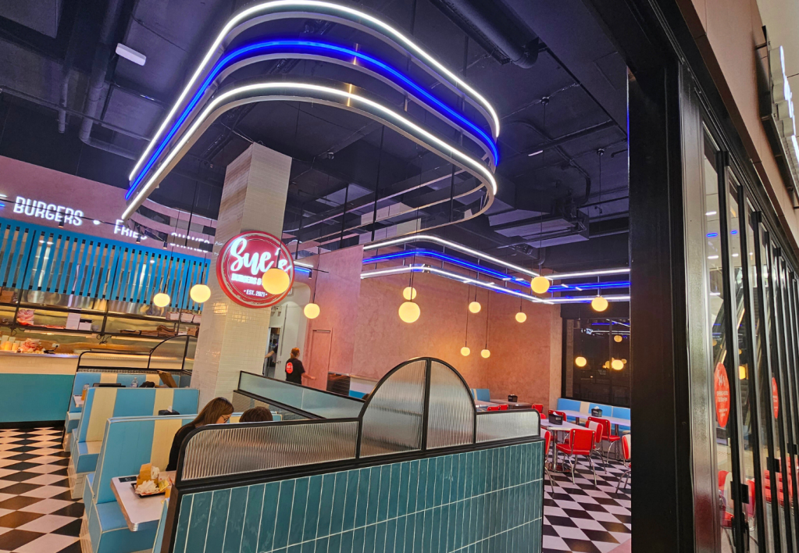
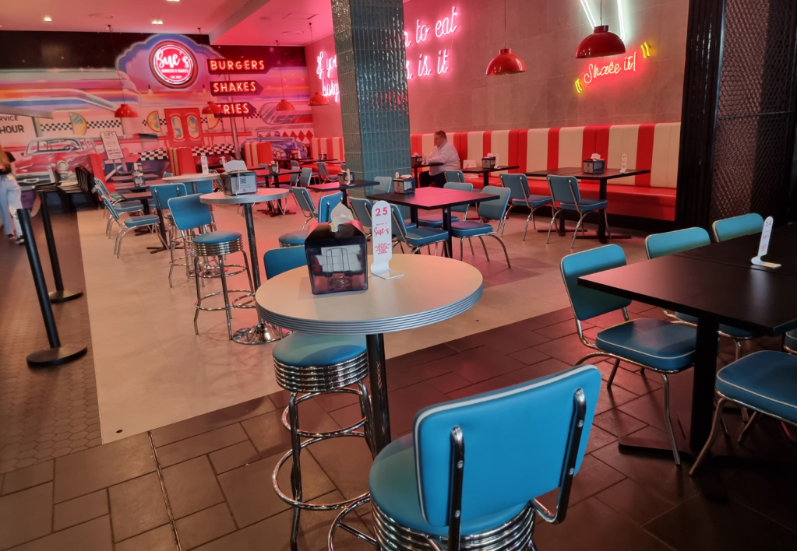
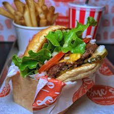
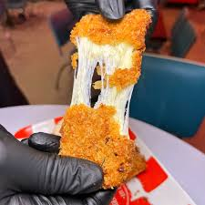
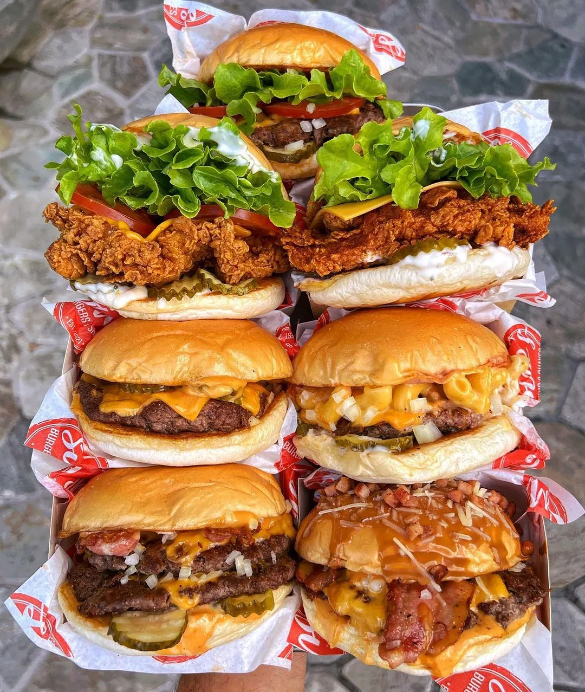
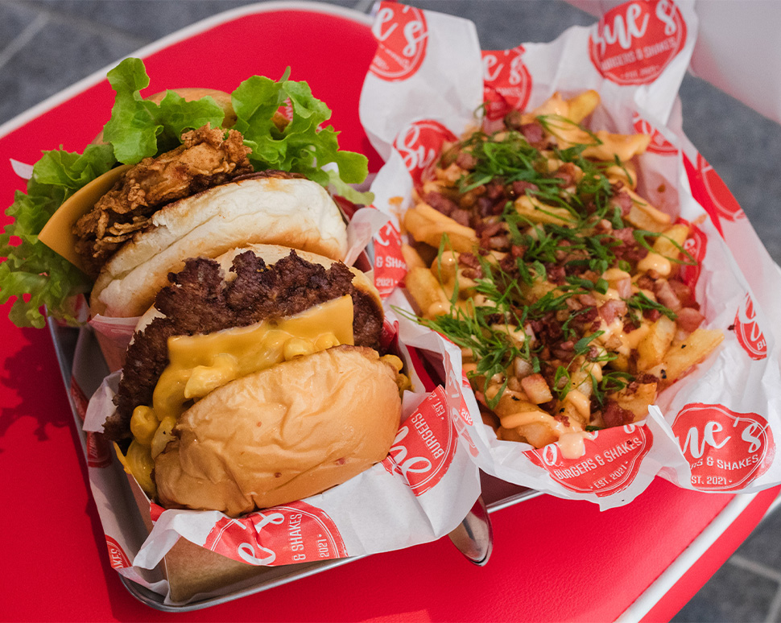
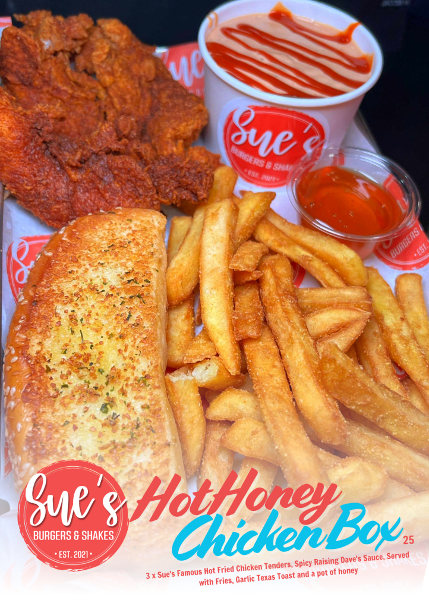

Chocolate Milkshakes






Sue's Burgers and Shakes is an American themed diner that specialises in their rich Milkshakes, juicy burgers and Tik Tok famous Fried Chicken. This is the ideal place for you and your friends to come visit to listen to the music, enjoy the 80s atmosphere, share photos online and enjoy some delicious food. Located in two locations, these are both recognised hotspots that are loved by a lot of locals.






